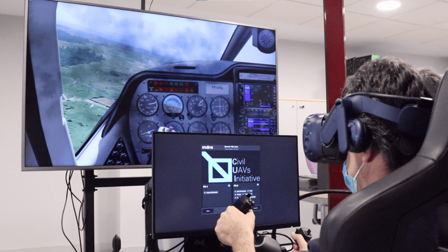
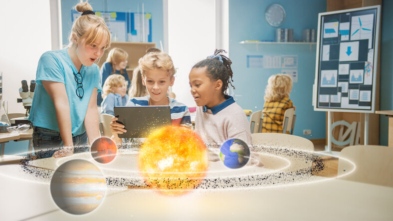
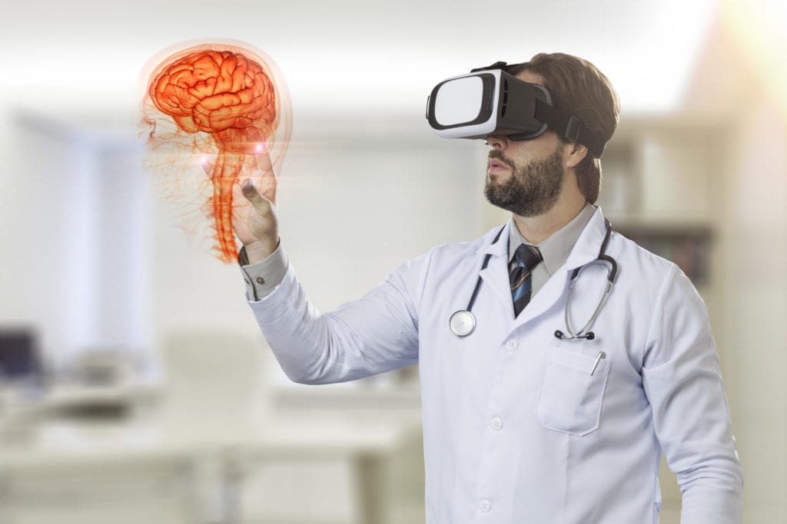
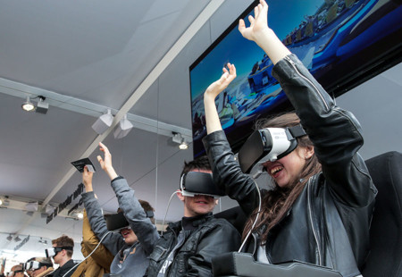
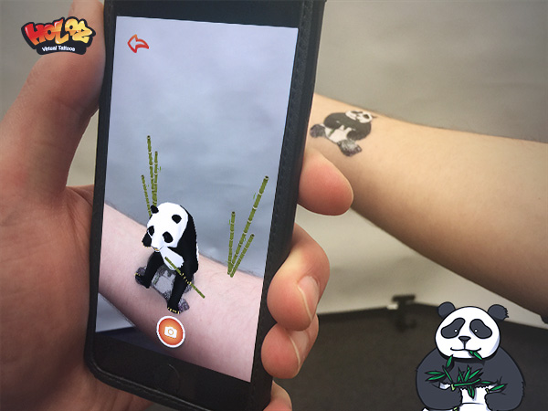
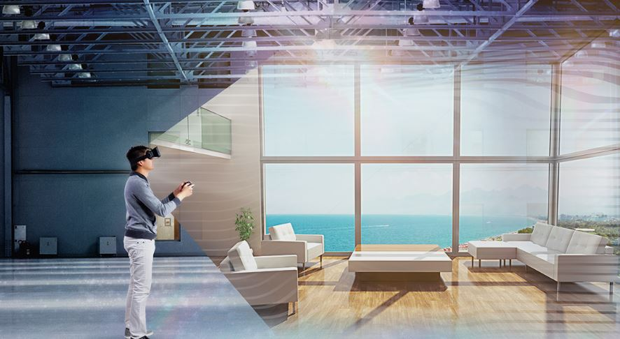
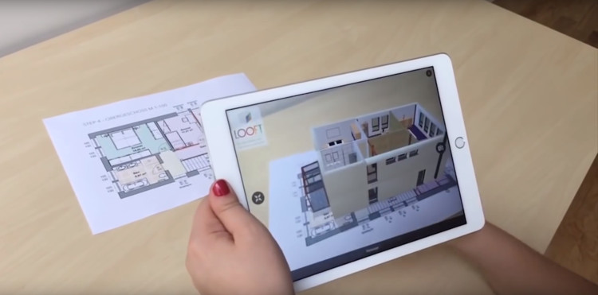

Introducción
La tecnología ha transformado la forma en que aprendemos, trabajamos y nos divertimos. Entre los avances más innovadores se encuentran la Realidad Aumentada (RA) y la Realidad Virtual (RV), dos herramientas que combinan el mundo digital con el físico para ofrecer experiencias inmersivas y educativas. Estas tecnologías tienen un gran impacto en áreas como la educación, la medicina, el entretenimiento y la arquitectura, permitiendo interactuar con entornos virtuales o integrar elementos digitales en la realidad cotidiana.
¿Qué es Realidad Aumentada?
La Realidad Aumentada (RA) es una tecnología que combina el mundo real con elementos digitales creados por computadora, como imágenes, sonidos o animaciones. A través de dispositivos como celulares, tablets o gafas especiales, permite superponer información virtual sobre el entorno físico, logrando una experiencia interactiva donde lo real y lo digital se mezclan. Ejemplo: Aplicaciones que presentan imágenes en 3D a través de la cámara, como el juego Pokemon Go

¿Qué es Realidad Virtual?
La Realidad Virtual (RV) crea un entorno completamente digital e inmersivo, donde el usuario puede explorar y moverse como si realmente estuviera dentro de ese mundo. Para vivir la experiencia se utilizan visores o gafas VR, que bloquean la visión del mundo real y muestran un espacio generado por computadora. Ejemplo: Simuladores de vuelo o videojuegos en 3D donde el usuario interactúa dentro del entorno virtual.
Aplicaciones en Educación
Realidad Virtual
Es la herramienta perfecta para llevar a los estudiantes a lugares inaccesibles o para practicar habilidades en entornos controlados. Por ejemplo, una clase de historia puede visitar las pirámides de Giza o caminar por el Coliseo Romano. En ciencias, los estudiantes pueden realizar experimentos químicos volátiles sin peligro, o los futuros médicos pueden practicar cirugías en un entorno virtual seguro, repitiendo el procedimiento tantas veces como sea necesario.

Realidad Aumentada
La Realidad Aumentada, por su parte, resalta al traer el contenido digital al mundo físico, haciendo que el aprendizaje sea más tangible. Su uso más popular es con los libros de texto; un estudiante puede escanear una página de anatomía y ver un modelo 3D del corazón latiendo sobre el papel, pudiendo girarlo y explorarlo. De igual manera, aplicaciones de astronomía usan RA para identificar estrellas y planetas simplemente apuntando el teléfono al cielo, o una clase de arte puede ver información superpuesta sobre una pintura en un museo.
En conjunto, el mayor beneficio de ambas tecnologías es que aumentan enormemente la motivación y la retención del conocimiento. Al cambiar el aprendizaje pasivo por un aprendizaje experiencial, los conceptos abstractos o complejos vuelven mucho más fáciles de entender y recordar, preparando mejor a los estudiantes en un mundo cada vez más digital.
Aplicaciones en Medicina
Realidad Virtual
El poder de la Realidad Virtual reside en la simulación inmersiva y la práctica sin riesgos. Los estudiantes de medicina ya no necesitan depender únicamente de libros o de la observación para aprender. Con la RV, pueden realizar una disección completa en un cadáver virtual tantas veces como sea necesario, explorando cada sistema de órganos en 3D. Más importante aún, pueden practicar cirugías complejas, como una neurocirugía o una laparoscopia, en un entorno simulado. Este quirófano virtual les permite cometer errores, aprender de ellos y repetir el procedimiento hasta alcanzar la perfección, todo sin poner en peligro a un paciente real.
Realidad Aumentada
La Realidad Aumentada, en cambio, brilla al potenciar la habilidad del médico en el mundo real. Durante una cirugía, un cirujano puede usar gafas de RA que proyectan la imagen de un tumor, obtenida de una resonancia magnética, directamente sobre la anatomía del paciente, permitiéndole ver a través de los tejidos y ser increíblemente preciso. En la formación, un estudiante puede apuntar su tablet a un maniquí y ver un modelo 3D animado del sistema circulatorio o nervioso, o seguir instrucciones paso a paso superpuestas para aprender a colocar correctamente una vía intravenosa.
En resumen, ambas tecnologías están creando una generación de profesionales de la salud más competentes y seguros. La RV ofrece un entorno de práctica ilimitado y libre de riesgos para construir memoria muscular y confianza, mientras que la RA proporciona capacidades visuales, mejorando la precisión y el acceso a la información durante los procedimientos en el mundo real. Ya no es ciencia ficción; es el nuevo estándar para la educación y la práctica médica.
Aplicaciones en Entretenimiento
Realidad Virtual
Su aplicación más grande y exitosa es en los videojuegos, donde el jugador no solo controla a un personaje, sino que es el personaje, mirando con sus propios ojos y moviendo sus propias manos en juegos como Half-Life: Alyx o Beat Saber. Más allá de los juegos, la RV está creando el cine inmersivo (películas de 360 grados donde estás en el centro de la acción) y eventos virtuales. Puedes asistir a un concierto de tu artista favorito o a un partido de la NBA desde la "primera fila" virtual, interactuando con otros fans de todo el mundo sin salir de casa.
Realidad Aumentada
La Realidad Aumentada, por su parte, ha triunfado al transformar en juegos el mundo que nos rodea, siendo su mayor éxito los juegos móviles. Pokémon GO es el ejemplo perfecto, convirtió el planeta en un tablero de juego, animando a millones a explorar sus ciudades para atrapar criaturas digitales que aparecían en la cámara de su móvil. Sin embargo, su uso más cotidiano y masivo son los filtros de redes sociales en Instagram, Snapchat y TikTok. Cada vez que usas un filtro que te pone orejas de perro o maquillaje virtual, estás usando RA. Además, está mejorando los eventos en vivo; en un estadio, puedes apuntar tu móvil al campo para ver las estadísticas de un jugador en tiempo real.
En esencia, la Realidad Virtual es la herramienta de escapismo definitiva, que nos permite visitar mundos imposibles, mientras que la Realidad Aumentada es la herramienta de mejora del mundo real, que trae la magia y la información digital a nuestro entorno.
Aplicaciones en Arquitectura
Realidad Virtual
La Realidad Virtual ha revolucionado la presentación de proyectos y la revisión de diseños. En lugar de mostrar al cliente planos 2D o imágenes renderizadas en una pantalla, el arquitecto puede entregarle un visor de RV. El cliente puede entonces caminar por su futura casa u oficina a escala, sintiendo la proporción de las habitaciones, la altura del techo y el impacto de la iluminación. Esto permite a los clientes tomar decisiones y solicitar cambios en la fase de diseño, lo que ahorra cantidades inmensas de dinero y evita sorpresas desagradables durante la obra.
Realidad Aumentada
La Realidad Aumentada, por su parte, es la herramienta indispensable en el terreno y el sitio de construcción. Un arquitecto puede ir al lote vacío, apuntar con una tablet o unas gafas de RA, y ver una maqueta virtual a escala real del edificio propuesto, evaluando cómo se integra con el entorno. Pero su uso más crítico es durante la construcción, un supervisor puede caminar por la obra y, a través de la RA, superponer los planos digitales (el modelo BIM) sobre la estructura real. Esto le permite "ver a través de las paredes" y detectar instantáneamente si una tubería, un conducto de ventilación o un muro están siendo instalados en el lugar incorrecto, previniendo errores de construcción antes de que ocurran.
En resumen, la Realidad Virtual se usa principalmente en la oficina para sentir y validar el diseño antes de construir, mientras que la Realidad Aumentada se usa en el terreno para verificar y construir el diseño con precisión milimétrica. Ambas tecnologías eliminan las conjeturas, conectando el modelo digital con el mundo real.